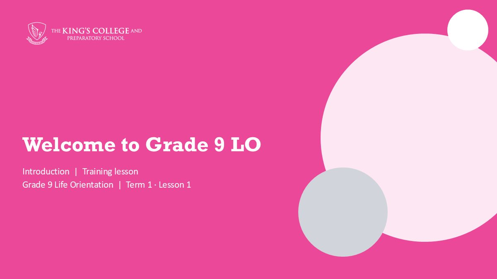

Term 1 · Lesson 1 · Training: higher-order answers
Welcome to Grade 9 LO
Start here
Today I will
- Know what higher-order questions ask for
- Build 3- and 4-mark answers
- Practise and mark my own answers
Grade 9 exams have more 3- and 4-mark questions. What do you think separates a 2-mark answer from a 4-mark answer?
Words to know
- Higher-order question
- A question that asks you to think deeply: analyse, evaluate, recommend or justify.
- Analyse
- Break a situation into parts and show how they are connected.
- Evaluate / Assess
- Judge something and give reasons for your judgement.
- Justify
- Give reasons that prove your answer is correct.
- Qualifier
- Extra detail that makes your point more specific or deeper.
- Outcome
- The result or effect of something.
Slides

Notes
In Grade 8 you learnt to build answers from blocks. In Grade 9 the questions ask for deeper thinking: more 3- and 4-mark questions, more 'analyse', 'evaluate' and 'justify', and a Section C paragraph. LO is not 'common sense': it tests whether you understand the key ideas AND can apply them to real situations. Use this guide for every LO task, test and exam.
1. Always read the mark allocation first
Next to every question you will see numbers in brackets, for example (2 x 2) (4). The FIRST number tells you how many answers to give. The SECOND number tells you how many marks each answer is worth, which tells you how many parts each answer needs. The number on its own at the end is the total.
| Brackets | What it means | What to write |
|---|---|---|
| (2 x 1) (2) | Two answers, 1 mark each | Two short, separate facts. No explanation needed. |
| (1 x 2) (2) | One answer worth 2 marks | A statement + a reason or explanation. |
| (1 x 3) (3) | One answer worth 3 marks | A statement + a reason + a result. |
| (1 x 4) (4) | One answer worth 4 marks | Statement + explanation + qualifier (more detail) + outcome. |
| (2 x 4) (8) | Two answers, 4 marks each | For EACH answer: the full four blocks. Two different points, not one point said twice. |
| (1 + 2) (3) | A question with two parts joined by 'and' | Part 1 (often a definition) for 1 mark, then Part 2 for 2 marks. |
2. The four building blocks
Every mark needs its own piece of information. Join the blocks into ONE clear, linked sentence:
- Statement (1 mark): your main point. 'Social media can expose teens to cyberbullying…'
- Explanation / reason (1 mark): how or why. '…which can damage their self-esteem…'
- Qualifier (1 mark): extra detail that makes the point deeper or more specific. '…especially when hurtful posts are shared widely and stay online…'
- Outcome (1 mark): the result or consequence. '…so they may withdraw from friends and their schoolwork may suffer.'
Analyse how social media can affect a teenager's well-being. (1 x 4) (4)
Answer: Social media can expose teens to cyberbullying ✓ which can damage their self-esteem ✓ especially when hurtful posts are shared widely and stay online ✓ so they may withdraw from friends and their schoolwork may suffer ✓.
3. Link your ideas with connectives
Connectives show the marker how your ideas fit together. Without them, the marker cannot see the explanation or the outcome.
| To give a reason | To add detail | To show a result | To compare |
|---|---|---|---|
| because, since, as | especially, for example, such as, in particular | so, therefore, as a result, which means, which leads to | whereas, however, on the other hand |
4. Higher-order command words
| Command word | What the marker wants | Tip |
|---|---|---|
| Analyse | Break the issue into parts and show how they are linked (cause → effect). | Use 'which', 'because' and 'so'. |
| Assess / Evaluate | Make a judgement (good/bad, effective/not) and give reasons. | Start with your judgement: 'This is effective because…' |
| Justify | Prove your answer or choice with reasons. | 'I would choose… because… which means…' |
| Critically discuss | Look at more than one side, then come to a conclusion. | Give both sides, then say which is stronger and why. |
| Recommend / Suggest | Give a practical action, how it works and its result. | Make it realistic for a teenager. |
| Distinguish / Differentiate | Show how two things are different. | One feature of EACH, joined by 'whereas'. |
Evaluate whether choosing the same subjects as your friends is wise. (1 x 4) (4)
Answer: It is not wise ✓ because friends may have different interests, abilities and career goals ✓ especially when gatekeeper subjects are needed for a career ✓ so you could end up with subjects that close doors to your own future ✓.
5. Using a source
- Read the source twice: once for the story, once to underline key words.
- When a question says 'from the source', use the source's words or details.
- Even when it doesn't, mention the names and details in your answer (e.g. 'Mia should…'). It shows you are applying the theory.
- Don't just copy the source: explain what it shows.
6. Section C: the paragraph question
- Read both questions; choose the one where you can make the strongest points.
- Plan for one minute: jot down two (or three) different points.
- Write each point as a full four-block sentence. Start each point on a new line.
- Check: are your points different? Is each one linked with connectives? Did you answer the command word?
7. How the exam is set out
- Section A: short questions: multiple choice, matching columns, give the term, true or false (correct it if false). One mark per fact.
- Section B: a source or scenario with questions that ask you to explain, describe, recommend and assess.
- Section C: longer questions where you usually choose ONE of two. You must analyse, evaluate or critically discuss, using the full building blocks.
8. Mark your own work and reflect
After each written activity your teacher posts the memo on Google Classroom. Mark your answers in GREEN pen: tick each building block you included. Then complete the reflection box: Which questions lost marks? Was a reason, a qualifier or an outcome missing? Did I answer the command word? What will I do differently next time? This is how you get better marks in the exam.
Depth earns marks: point, reason, detail, result, in one linked sentence.
Written practice
- 1.1Define the term 'accountability'.(1 x 1) (1)
- 1.2Explain why Grade 9 learners need to plan their time carefully.(1 x 2) (2)
- 1.3Analyse how spending late nights on a phone can affect a Grade 9 learner's schoolwork.(1 x 3) (3)
- 1.4Evaluate whether choosing the same subjects as your friends is a wise decision. Give a clear judgement with reasons and a result.(1 x 4) (4)
Test yourself
- What does 'evaluate' ask you to do?
- Name the four building blocks of a 4-mark answer.
- Why should you plan before a Section C answer?
Show answers
1. Judge something and give reasons. 2. Statement, explanation/reason, qualifier, outcome. 3. So the points are strong, linked and not repeated.
Finished early?
Turn a 1-mark statement into a full 4-mark answer, block by block.
- Copy this statement into your LO book: 'Late-night gaming can make a teenager tired.'
- Add a reason, a qualifier and an outcome, joined with connectives (which, especially, so) into ONE sentence.
- Underline each block in a different colour and label it: statement, explanation, qualifier, outcome.
- Check: did each block add new information, or did you say the same thing twice?